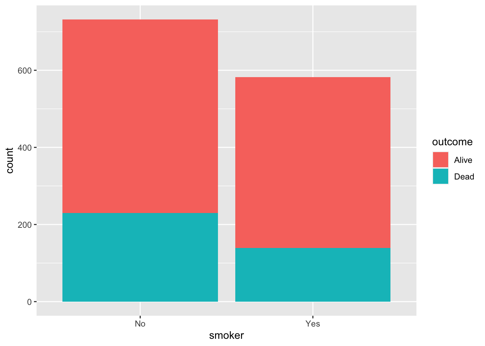
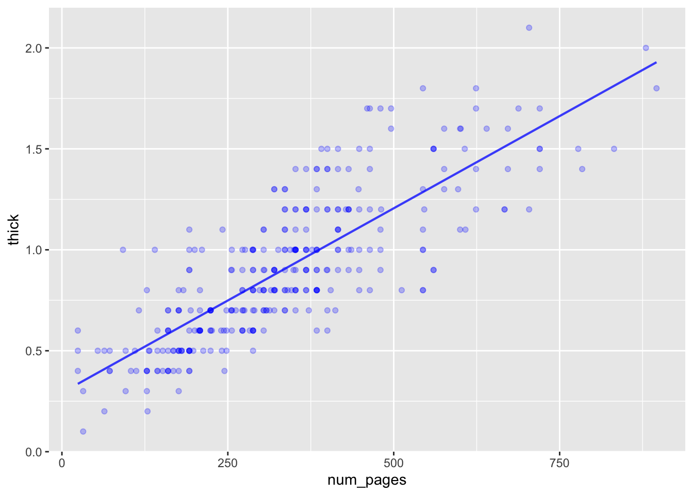

Whickham %>%
df_stats(outcome ~ smoker, prop, ci.prop) response smoker prop_Alive lower center upper
1 outcome No 0.6857923 0.6507824 0.6857923 0.7192969
2 outcome Yes 0.7611684 0.7243939 0.7611684 0.7952677Statistical thinking
Here’s a graph of the data in our standard response-vs-explanatory graphic frame:
Whickham %>%
ggplot(aes(x = smoker, y = outcome)) +
geom_jitter(width=0.2, height=0.2, alpha=0.5)
The graph suggests that non-smokers were more likely than smokers to be dead at the follow-up interview. But it’s hard to calculate proportions from such a graph. It’s reasonable to argue that for the purpose of showing the fraction of smokers and of non-smokers who died, a bar chart would be better.
Whickham %>%
ggplot(aes(x=smoker, fill=outcome)) +
geom_bar()
Whickham %>%
ggplot(aes(x=smoker, fill=outcome)) +
geom_bar(position = "fill") +
ylab("Proportions")

Whickhamsmoking and survival data.The left barplot, showing counts, suggests that a higher proportion of non-smokers died than of smokers. But its easy to instruct the geom_bar() to graph proportions rather than counts, as done in the left plot. This makes it easy to conclude at a glance that a higher proportion of non-smokers have died.
The important question here, “Does smoking affect mortality?” translates well into the response/explanatory paradigm: outcome is the response variable while smoker is the explanatory variable. In the jitter-plot presentation of the data, these assignments are clearly indicated in the computer commands, which set x=smoker, y=outcome. In the barplot, a different notation is used: x=smoker, fill=outcome.
Unfortunately, neither of the graphic styles—jitter or boxplot—answers the important question. At best they provide a description of the nurses in the Whickham data frame.
To answer the important question, we need to invoke statistical thinking. In particular, we need an interval summary of the proportion who died, not the point summary produced by the barplot.
This doesn’t mean that we can’t easily calculate the proportions from the categorical response variable: we just have to use the right commands. for instance:
Whickham %>%
df_stats(outcome ~ smoker, prop, ci.prop) response smoker prop_Alive lower center upper
1 outcome No 0.6857923 0.6507824 0.6857923 0.7192969
2 outcome Yes 0.7611684 0.7243939 0.7611684 0.7952677The point summary—the prop_Alive column—suggests an obvious difference between the smokers and non-smokers. The interval summary—columns lower and upper—tempers this conclusion a little: the intervals almost touch.
Although regression is our go-to technique for modeling relationships between variables, we can’t use it directly on a categorical response variable.
Here’s what happens if we try:
lm(outcome ~ smoker, data = Whickham) %>% confint()Warning in model.response(mf, "numeric"): using type = "numeric" with a factor
response will be ignoredWarning in Ops.factor(y, z$residuals): '-' not meaningful for factorsWarning in Ops.factor(r, 2): '^' not meaningful for factors 2.5 % 97.5 %
(Intercept) NA NA
smokerYes NA NAThe computer’s warning message is a reminder that the response variable is categorical. (The message uses the phrase “factor response,” which is just computerese for “categorical response.”)
To use regression with a two-level categorical response variable, transform it into a zero-one encoding. In the following, we’ll use 1 to represent "Alive" and 0 to represent "Dead", although we can equally well do things the other way around.
lm(zero_one(outcome, one="Alive") ~ smoker, data = Whickham) %>%
confint() 2.5 % 97.5 %
(Intercept) 0.65329520 0.7182895
smokerYes 0.02654662 0.1242054You don’t yet know enough to interpret this interval summary. That will have to wait until Lesson 24. The significant1 feature of the interval on smokerYes is that it does not include zero. In everyday terms, the interval means, “Smokers are 3 to 12 percentage points more likely to survive for 20 years than are non-smokers.”
Using interval summaries instead of point summaries is an important aspect of statistical thinking, but there are other aspects that need to be taken into account. A simple, but important, question is whether the nurses recorded in the Whickham data frame are good representatives of all smokers. (It turns out that the nurses in Whickham are all women interviewed in the 1970s. At that moment of history, women were very different than men when it comes to smoking, and the Whickham smokers were also very different from today’s female smokers. We’ll say more about this in the demonstration below.)
Statistical thinking also leads one to ask another sort of question: What else might be going on other than smoking? In technical language, the other-goings-on are called “covariates,” the topic of Lessons 28 & 29.
For instance, you might wonder about the overall result from our brief examination of the Whickham data. Is it really the case that the smokers were more likely to survive than the non-smokers? The answer is “yes,” as we have demonstrated from the previous analysis. But this answer is completely misleading. Tobacco companies worked hard to mislead people into thinking that smoking was not dangerous. They knew full well the negative health consequence of smoking, but they used statistical-sounding claims to hide this knowledge from the public.
In the following demonstration, we’ll look at the Whickham data again using the power of regression models to incorporate covariates.
Remember that you are not expected to master the calculations in these demonstrations. Focus your attention on the output from the calculations.
It goes without saying that smoking is not the only thing that kills people. There are other risky behaviors such as heavy drinking, there’s environmental exposure to pollutants, and there’s disease (other than the smoking induced ones of lung cancer, emphysema, and high blood pressure). But there’s one risk factor for death that everyone knows about but nobody is doing anything about: getting old.
In virtually every public health or clinical study, the participant’s age is taken into account. Not doing so can produce a completely misleading view of the situation. This is also the case with smoking and mortality in the Whickham study.
Regression techniques enable us to take multiple explanatory variables into account. In this demonstration, we’ll use regression to study outcome as a function of smoker and, importantly, age.
To get started, we need to remember to convert the categorical outcome variable into a zero-one encoding. After that, building the model is not so hard.
survival_model <- Whickham %>%
mutate(survived = zero_one(outcome, one="Alive")) %>%
model_train(survived ~ age + smoker, data=.)From this model, we can read off an interval summary of the effect of smoking on survival:
survival_model %>% confint() 2.5 % 97.5 %
(Intercept) 6.7686824 8.5002535
age -0.1382922 -0.1101260
smokerYes -0.5369777 0.1238805A full understanding of this interval summary will need to wait until Lessons 22 through 24. For the present, we’ll simply point out that the summary interval on smokerYes includes zero, so Whickham provides no support for the mistaken conclusion that smoking improves survival. But seeing this requires taking into account age. A graphic may help explain why:
Model_output <- model_eval(survival_model, interval="confidence")
Model_output %>%
ggplot(aes(y = survived, ymin=.lwr, ymax=.upr, x=age, color=smoker, fill=smoker)) +
geom_jitter(height=.1, width=0, alpha=0.2) +
geom_ribbon(alpha=0.2) 
The interval summary in the graph shows how the probability of survival changes for different ages. The intervals for non-smokers and smokers entirely overlap. For both groups, 20-year survival goes down with greater initial age. So why did the model outcome ~ smoker suggest that smokers have a higher survival? The reason relates to the proportion of smokers with initial age 70+. In the 1970s, life expectancy was such that people 70+ were unlikely to survive 20 years. This pulls down the survival rate at that age. Notice that the 70+ nurses were unlikely to have been smokers compared to younger nurses. The 70+ nurses grew up in an era when social conventions caused smoking to be uncommon for women (even though it was very common for men).
Starting with this lesson, the course will be about ways to extract actionable information from data. “Actionable information” is in a form to guide decision making. Core techniques for extracting information from data are graphics and models.
In this lesson …
Make a jitter plot of gestation period versus smoking status. Then find the mean for each smoking status show this table. Then the ci.mean() as a table and graphed as an interval.
values <- lm(gestation ~ smoke, data = Gestation) %>%
model_eval(interval="confidence", skeleton=TRUE)
Gestation %>% ggplot(aes(x = smoke, y = gestation)) +
geom_jitter(width=0.2, alpha=0.1) +
geom_errorbar(data = values, aes(x=smoke, ymin=.lwr, ymax=.upr), y=NA)Warning: Removed 13 rows containing missing values (geom_point).
While in draft, see Objectives/Obj-lesson-19.qmd. Those will be copied over here.
A “data graphic” is one that displays each of the rows of a data frame. Graphics are fundamentally two-dimensional, so the data graphic has a frame that maps one variable to the vertical axis (“the y aesthetic”) and another to the horizontal axis (“the x aesthetic”).
Models are important to extracting information from data. Models always have a response variable and one or more explanatory variables. So our standard format for data graphics will put the response variable on the vertical axis and the one of the explanatory variables on the horizontal axis.
A popular competitive sport in Scotland is hill racing. This is a running race that involves ascending a hill rather than running on the flat. The math300::Hill_racing data frames records about 2000 winning performances in hill races. (See ?Hill_racing for the documentation.)
A simple model of a hill race performance is time ~ distance.
time ~ distance?ANSWER:
Hill_racing that is consistent with this choice of explanatory and response variables.# complete the code
# Hill_racing %>%
# ggplot(aes(x=_____, y=______)) +
# geom_point()# complete the code
Hill_racing %>%
ggplot(aes(x=distance, y=time)) +
geom_point() Warning: Removed 10 rows containing missing values (geom_point).
The basis of the techniques you’ll learn in this second half of the course is building a model that uses explanatory variables to account for the response variable.
We’ll extract various quantities from the models we build and, in particular, use those quantities to compare one model to another, the point being to see SAY WHAT.
Surprisingly, an important model for starting the chain of comparisons has no explanatory variable. OR RATHER, WE MAKE UP AN EXPLANATORY variable. SHOW MEAN is a coefficient from such a model. Model formula: y ~ 1
Let’s use the standard data-graphic format to display to display y ~ 1,
Whickham %>% mutate(group = "all") %>% ggplot(aes(y=age, x=group)) + geom_jitter()
time ~ distance + climb. In this model there are two explanatory variables. Only one of them can be mapped to the horizontal axis, the other will need to be mapped to some other aesthetic or to faceting.# complete the code
# Hill_racing %>%
# ggplot(aes(x=_____, y=______)) +
# geom_point()In lesson 38 you’ll learn to be wary whenever a statistician uses the word “significant.”↩︎